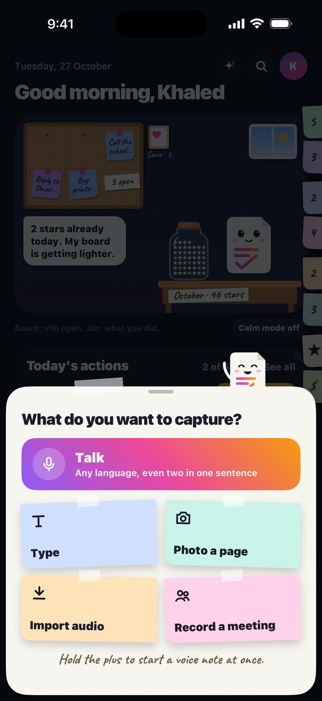
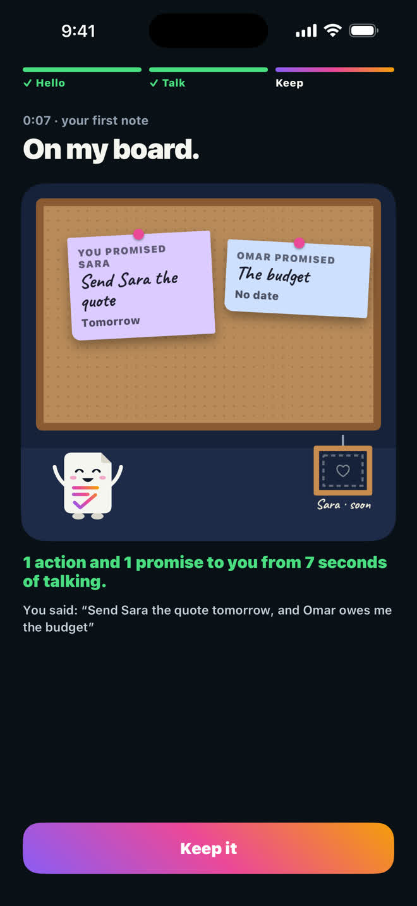
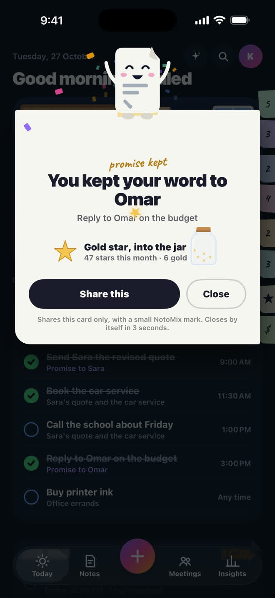
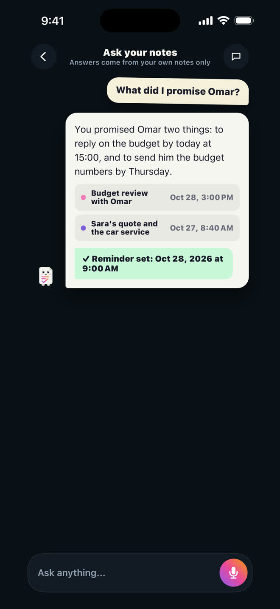
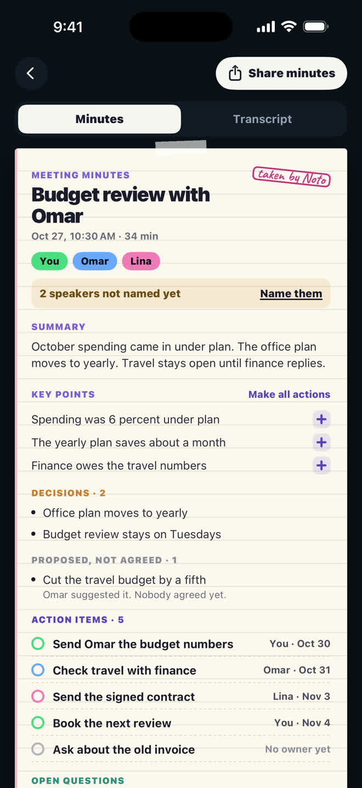
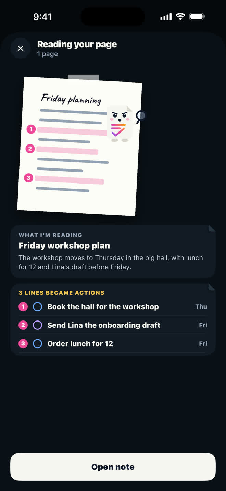
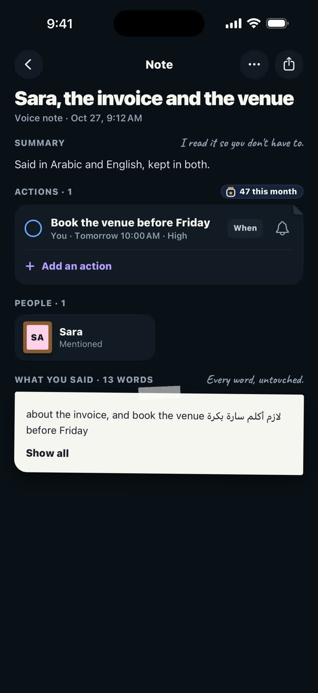

Hi, I'm Noto. Here's how I work.
the NotoMix playbook
Every part of the app in a few steps, with the real screens. No videos to sit through. Read the one you need and get back to your day.
Written for NotoMix 2.0 on iPhone01 · THE BASICS
Your first note
Talk the way it comes out. Messy is fine, that's my job.
- Tap the + in the middle of the tab bar. A sheet asks What do you want to capture?
- Pick one: Talk (any language, even two in one sentence), Type, Photo a page, Import audio or Record a meeting.
- For a voice note, just talk, then stop. A few seconds later the note is ready, organized.

02 · WHAT YOU GET
What a note becomes
One ramble in, a clean page out.
- A title, a short summary and the key points.
- Actions with the dates you said out loud. Tap When or the bell on an action to set or change its reminder.
- Promises go both ways, with names: what you owe lands in You promised, what Sara or Omar owe you lands in Others promised.
- Your own words stay under the summary in What you said, untouched, so you can always check.

03 · TODAY
Today and Noto's jar
The Today tab is your day: Today's actions, what you promised, and my corner of the room.
- Tick an action when it's done. A paper star flies into my jar.
- Keep a promise to someone and it's a gold star, with a promise kept card.
- Want to tell them? Share this shares that card only, nothing else from your notes.

04 · ASK
Ask your notes
Everything you've said becomes something you can ask, in any language.
- On Today, tap the sparkle at the top. You can also type a question in the search on the Notes tab.
- Ask it like you'd ask a person: What did I promise Omar?
- The answer names the notes it came from. Tap one to read the original.

05 · MEETINGS
Meetings
Put the phone on the table. No bot, no invite, no link.
- Open the Meetings tab and tap Start a meeting. Add a title and who's joining if you like; both are optional.
- Choose what you get, then tap Start meeting.
- Pause or end it from the screen, the lock screen or the Dynamic Island. Mark this moment pins a point you want to find later.
- You get a notification when your minutes are ready: speakers named, decisions, open questions and actions for each person.

06 · PAPER
Photo a page
A whiteboard, a handout, a screenshot of a long chat.
- Tap +, then Photo a page. Snap or pick up to five pages or screenshots.
- I read every page and write it up like any other note.
- Anything asked of you becomes an action, with its date when one is written there.

07 · FROM OTHER APPS
Bring in voice notes and more
The seven minute voice note from a friend, readable in seconds.
- In WhatsApp, Telegram, Mail, Files, Photos or any app, tap Share on a voice note, a piece of text or up to five pictures.
- Pick NotoMix in the share sheet.
- It becomes a note like your own: summary, key points and actions.
09 · LANGUAGES
Two languages, one note
Arabic and English in the same sentence is how a lot of us talk. Talk that way.
- Just record. Switch languages mid sentence whenever you like.
- Want every note written in one language? Settings, Organize in my language. Notes are written in the app's language, whatever you speak.
- When a note was turned into your language, a ⇄ chip at the top says which language you spoke. Tap it to see the note the way you said it, and tap again to go back.

10 · MORNINGS
Morning Brief
One notification every morning: your actions, what's due, and your day.
- On Today, tap your picture at the top, then Settings.
- Under Morning Brief, set the Brief time you want.
- Turn on Include calendar to see your meetings in it too. Your calendar is read on your iPhone only.
11 · WITHOUT OPENING THE APP
Siri, widgets and the lock screen
The quickest way in is the one already on your screen.
- Siri: Record with NotoMix Stop recording in NotoMix Start a meeting in NotoMix What did I promise today in NotoMix Ask NotoMix
- Action Button (iPhone 15 Pro and later): Settings, Action Button, Shortcut, then NotoMix and Record.
- Widgets: Your day (medium) shows what's due and lets you tick it off. Quick Record goes on the Home Screen (small) or under the clock on the lock screen.
- Control Center (iOS 18): add the Record a note control.
- While you record: the lock screen and the Dynamic Island show it, with Pause and End.
12 · TALK IN ANY APP
The NotoMix keyboard
Dictate into any text box, and I clean up the ums.
- Open the iPhone Settings app: General, Keyboard, Keyboards, Add New Keyboard, then NotoMix.
- Tap NotoMix in that list and turn on Allow Full Access. It is only for the microphone: nothing you type is kept or sent.
- In any app, switch to the NotoMix keyboard with the globe, and tap the microphone.
- NotoMix opens to listen. Go back to where you were typing with the arrow at the top left, and talk. Your words are written into that app.
13 · ON YOUR WRIST
Apple Watch
Record on your wrist, even with the phone at home.
- Open NotoMix on the watch. It starts recording right away.
- Tap Stop and send.
- It goes to your iPhone when it's nearby and is organized there, like any other note.
14 · LOOKING BACK
Insights
What you captured, what you finished and the promises you kept.
- Open the Insights tab and pick Day, Week, Month or Year.
- See your day hour by hour, your chattiest day, and who promised you what.
- Omar still owes you something? Send a nudge opens your share sheet with a friendly message. I never send it myself.
15 · YOUR STUFF
Your account and your notes
Your notes live on your iPhone and in your own iCloud.
- Your first note needs no account. Sign in or create one whenever you want, from your picture at the top of Today.
- With iCloud on, your notes are backed up there. Settings shows when the last backup was, and audio and photo backups are yours to switch on.
- To leave, Settings, Delete account. It removes your account and your notes from this device and your iCloud.